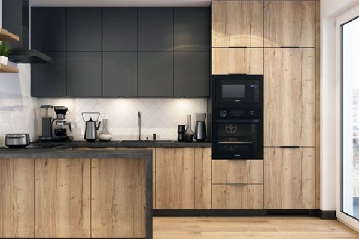

کابینت آشپزخانه
کابینت (به فرانسوی: Cabinet) قفسه ای است که گاهی در حمام و اغلب در آشپزخانه برای نگهداری مواد غذایی، لوازم پخت و پز و ظروف استفاده می شود. کابینت ها در آشپزخانه های امروزی، اغلب بیشتر فضای بین یخچال، اجاق گاز و سینک ظرفشویی را اشغال می کنند؛ ولی در حمام ها، کابینت معمولاً بهصورت تکی و فقط در بالای روشویی و یا توالت به منظور نگهداری حوله، دارو یا وسایل بهداشتی استفاده می شود.

انواع کابینت
کابینت ها بسته به نوع مواد خام تولید، به کابینت های تولید شده از فلز، چوب، ام دی اف، های گلاس، پی وی سی، ممبران یا وکیوم، روکش چوب یا ترکیبی تقسیم می شوند. از نظر نوع استفاده نیز کابینت ها به دو گروه کابینت آشپزخانه و کابینت روشویی (مخصوص سرویس بهداشتی) تقسیم می گردند. مواد اولیه تولید کابینت های سرویس بهداشتی عموماً از پی وی سی می باشد؛ زیرا این ماده در مقابل رطوبت مقاومت کافی دارد.
طراحی کابینت ها
طراحی کابینت ها با توجه به تنوع آشپزخانه ها از نظر شکل طراحی (یو شکل، ال شکل، خطی، شبه جزیره ای و جزیره ای)، صورت می پذیرد. در هر حال در هنگام طراحی کابینت باید دقت نمود که جهت باز شدن در آن باید برخلاف جهت حرکت شخص استفاده کننده باشد.
MDF
ام دی اف تخته فیبر مانندی است که به روش خشک درست می شود. درب های ام دی اف را پس از ساخت آن می توان روکش کرد. این نوع روکش ها نه تنها موجب زیبایی درب چوبی می شود بلکه دوام آن را نیز بیشتر می کند. روکش های تزئینی روی درب ام دی اف هم موجب دوام درب می شود و هم این نوع درها را مناسب محیط های مرطوب مانند سرویس های بهداشتی و حمام می کند. از متداول ترین روکش های درب ام دی اف، ملامینه است. در این روش کاغذ دکوراتیو رزینی با فشار و حرارت روی تخته درب ام دی اف محکم می گردد.
ویژگی های ام دی اف
از مزایای ام دی اف مقاومت بالای آن و قابلیت داشتن روکش هایی از جنس پی وی سی، ملامینه … است. این نوع روکش ها با رنگ های پلی استری به راحتی رنگ می شوند. اتصال فینگر جوینت با قطعات چوبی طولی کلاف ها موجب استحکام هر چه بیشتر ام دی اف شده است. از آنجا که مقاومت کلاف ها در بالا و پایین درب لولا ها و قفل ها تقویت می شود ضخامت این نواحی در حدود دو برابر بقیه مناطق درب ام دی اف است. همه ی این عوامل در بهبود کیفیت در چوب های ام دی اف موثرند، به علاوه برای مقاومت بیشتر سه عدد چوب کلاف به صورت عرضی با فاصله مساوی درون درب ام دی اف قرار داده می شود. پس از تولید کلاف های چوبی بین چوب ها شبکه های مقوایی لانه زنبوری کام نصب می شود که حالت ضربه گیری دارد یعنی فشار حاصل از سطح مقطع ضربه دیده را به سطح مقطع بزرگتری پخش می کند و از آسیب دیدن سطح چوب ممانعت می کند. چون این لایه ها در چوب ام دی اف بسیار سبک اند از افتادگی لولای در به مرور زمان می کاهد. این امر در لولاهای قدیمی با برش فیبر و چوب صورت می گرفت که آرایش چندان منظمی نداشت و درب ها سنگین تر و آسیب پذیرتر بودند. سپس رویه های ام دی اف با سایزهای مناسب روی درب ها نصب می شوند و وارد مرحله ی رنگ آمیزی و نقاشی می شود. پس از اتمام رنگ آمیزی درب به قسمت خشک کن رفته و بعد بسته بندی می شوند. درب های ام دی اف با روکش پی وی سی مقاومت بیشتری نسبت به سایر ام دی اف های روکش دار را دارند. روکش چوبی درب ام دی اف از رنگ پلی استری است. این در حالی است که روکش های پی وی سی از روکش هایی است که برای دیزاین درب ها استفاده می شوند.
نقش کابینت در آشپزخانه
برای مدیریت بهتر فضای آشپزخانه با توجه به مثلث کار و با توجه به شرایط خاص استفاده کننده، از کابینت استفاده می شود. طراحی صحیح کابینت در آشپزخانه، موجب می شود تا فضای مفید و قابل استفاده در آن را برای آشپز جهت پخت وپز و شست و شوی ظروف افزایش یابد.